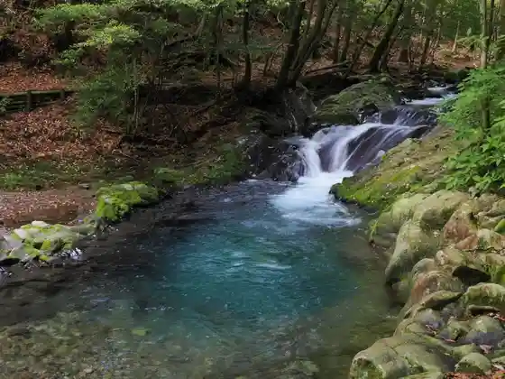
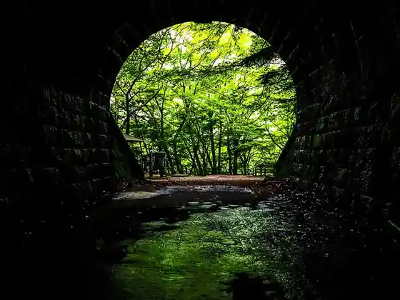

Shuzen Tera
Izu, Shizuoka · 0558-72-0053 · Official / source link
Jitensha no Kuni Saikurusupotsu Center
Izu, Shizuoka · 0558-79-0001 · Official / source link
Namesawa Gorge
Izu, Shizuoka · 0558-85-1056 · Official / source link

Naka Izu Wainariishato T.S
Izu, Shizuoka · 055-883-5111 · Official / source link
Kyu Amagi Tonneru
Izu, Shizuoka · 0558-85-1056 · Official / source link

Gatsugase Umebayashi
Izu, Shizuoka · 0558-85-1056 · Official / source link
Toi Kanayama
Izu, Shizuoka · Official / source link
Roadside Station Izu Gatsugase
Izu, Shizuoka · 0558-79-3977 · Official / source link
Terasseorenjitoi
Izu, Shizuoka · 0558-98-0802 · Official / source link
Shuzenji Niji no Sato
Izu, Shizuoka · 0558-72-7111 · Official / source link
Joren Falls
Izu, Shizuoka · 0558-85-1125 · Official / source link
Roadside Station Amagi Koe
Izu, Shizuoka · 0558-85-1110 · Official / source link
Daruma Yamataka Hara Resutohausu
Izu, Shizuoka · 0558-72-0595 · Official / source link